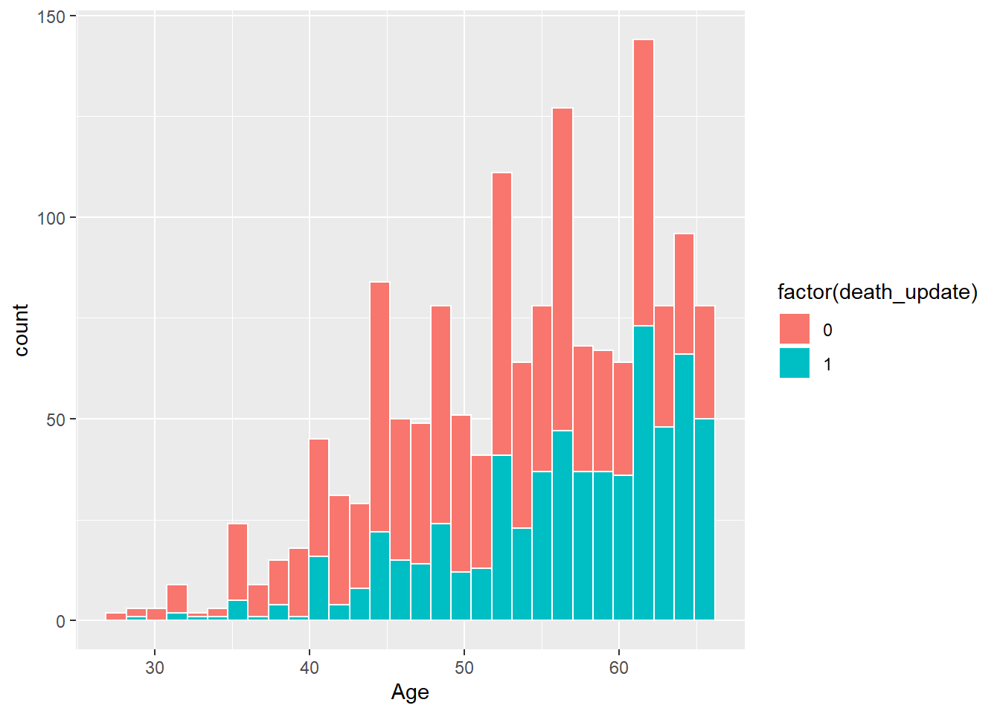
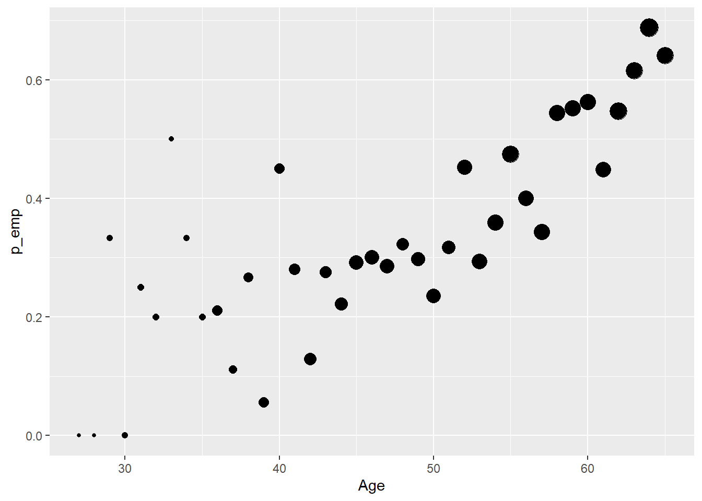
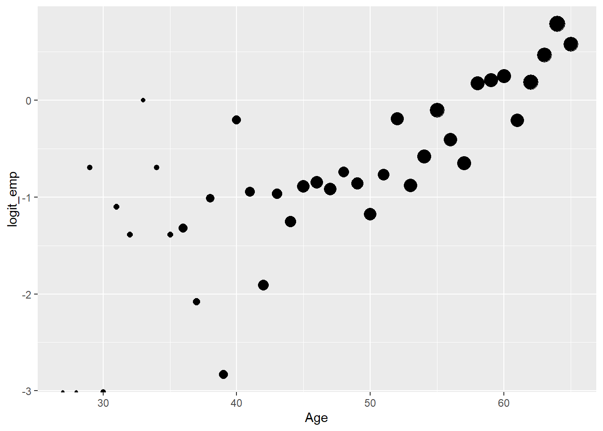
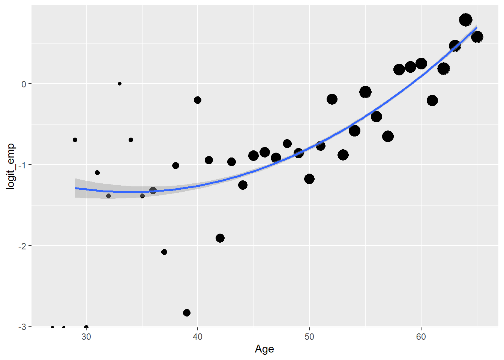
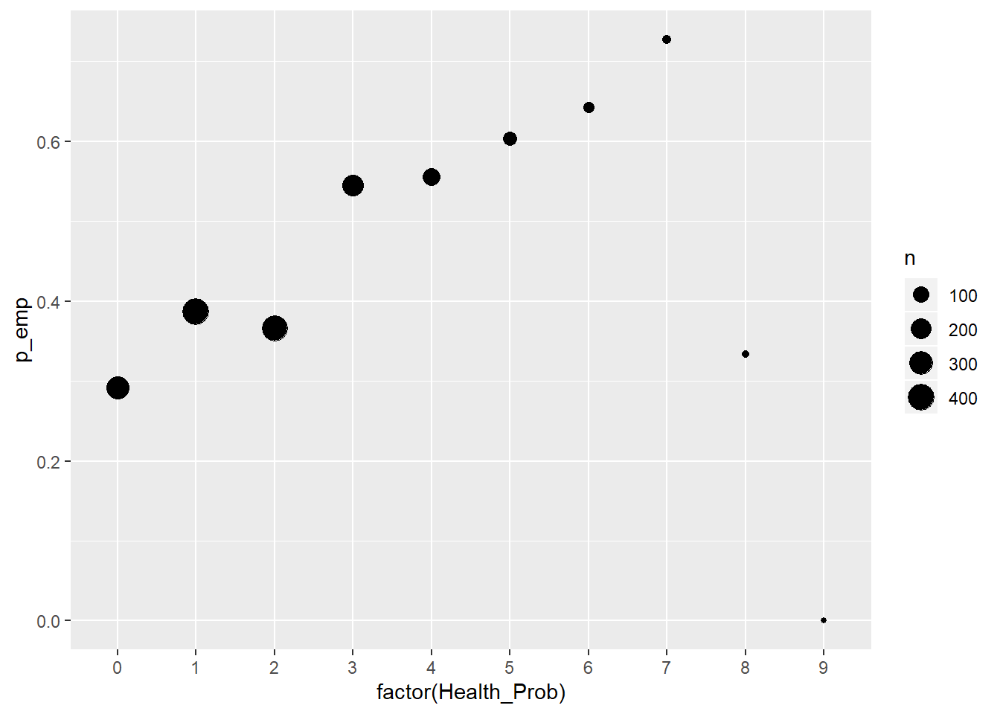
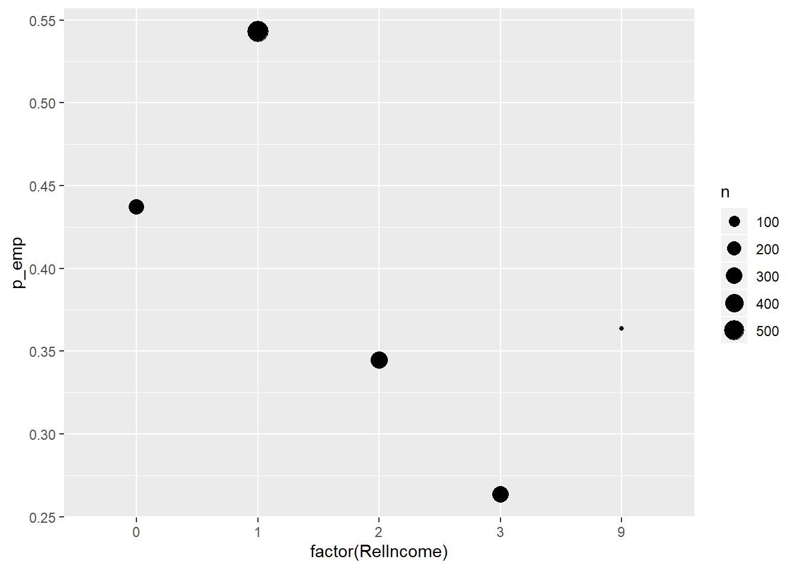
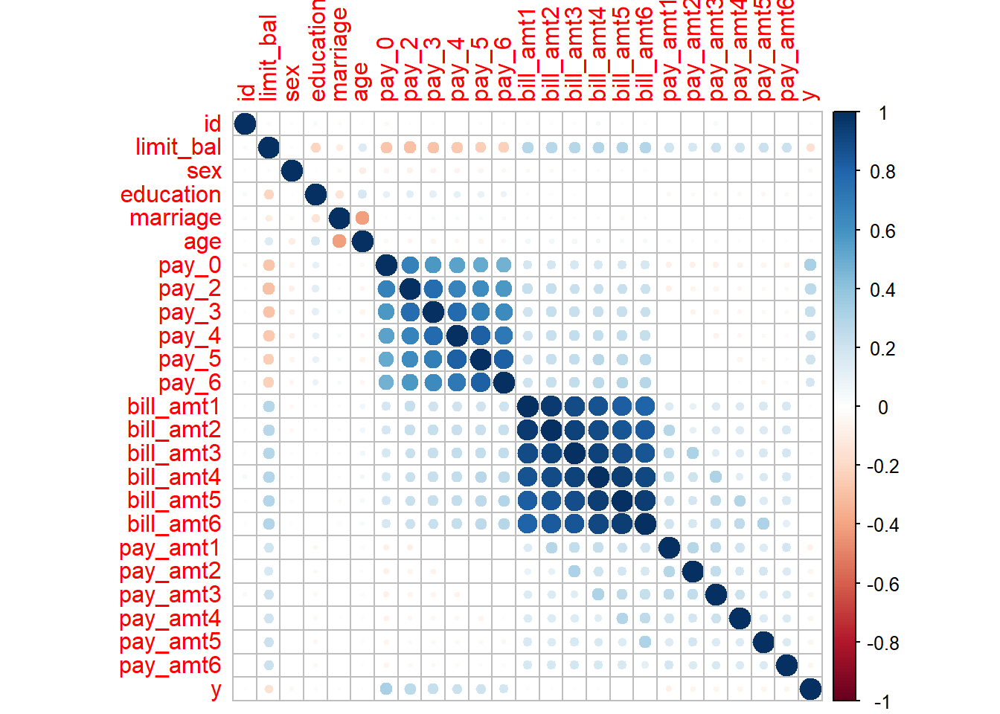
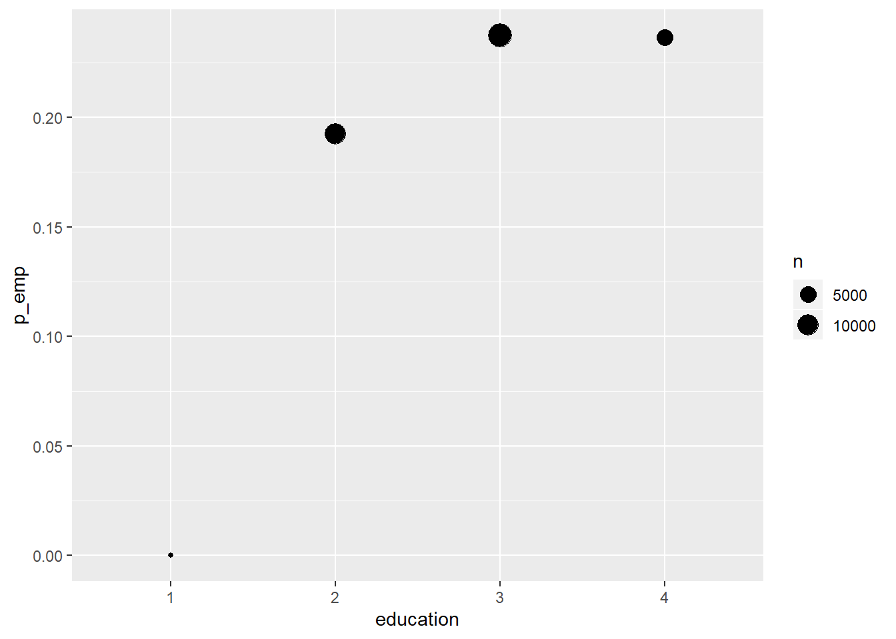
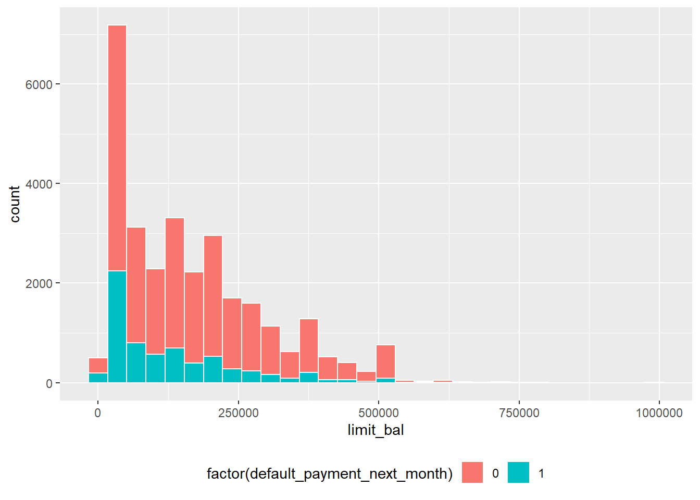
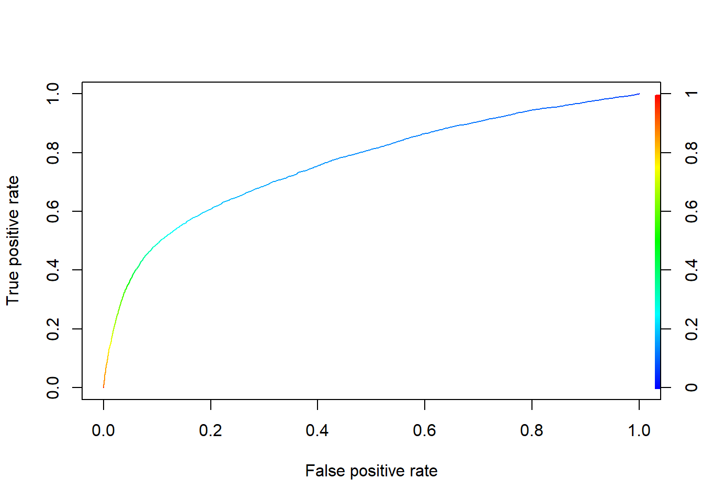

library(tidyverse)
library(ggplot2)mi_df = read_csv("datasets/MI_PracticeDataset.csv")head(mi_df)Format:
sex - 1- male , 2- femaleSteadyPartner - Living with steady partner (0 - No, 1- Yes)RelIncome - 1- Lower; 2- Similar; 3- Higher; 9-Refuse to tellPerceivHealth - 1- Poor; 2- Not so good; 3- Fair; 4-Good; 5- ExcellentHealth_Prob - Number of health problemsWork_T5 / Work_T4 - Employment status reported during follow-up interviews (0- None; 1- Part/full job; 2- Unknown)T1_pa / T2_pa / T3_pa / T4_pa /T5_pa - Physical activity level reported in the i-th interview. Ta_p1 - refers to the activity a before myocardial infarction.cursmoker - Smoking as reported in the first interview - as stated at the time of hospitalization, refers to the smoking status in the year preceding the infarction.str(mi_df)## Classes 'spec_tbl_df', 'tbl_df', 'tbl' and 'data.frame': 1521 obs. of 34 variables:
## $ num1 : num 1001 1002 1003 1004 1005 ...
## $ Sex : num 1 1 1 1 1 1 1 1 2 1 ...
## $ Age : num 52 60 51 62 55 49 45 56 57 57 ...
## $ SteadyPartner : num 1 1 1 1 1 1 0 0 1 1 ...
## $ RelIncome : num 3 1 3 1 3 3 3 1 1 3 ...
## $ Work_prior : num 1 1 1 1 1 1 1 0 0 1 ...
## $ Work_T5 : num 1 2 1 0 1 1 1 0 0 1 ...
## $ Work_T4 : num 1 0 1 1 1 1 1 0 0 1 ...
## $ Education : num 18 0 14 12 16 20 20 10 6 16 ...
## $ Neighborhood : num 17 11 19 12 17 19 19 NA 5 17 ...
## $ PerceivHealth : num 4 2 4 3 5 4 5 1 2 5 ...
## $ Health_Prob : num 0 4 0 2 2 0 1 1 3 4 ...
## $ HTN : num 0 1 0 0 1 0 0 0 1 1 ...
## $ Diabetes : num 0 1 0 0 0 0 0 0 0 0 ...
## $ cursmoker : num 0 1 0 0 0 0 0 1 1 0 ...
## $ formersmoker : num 1 0 0 1 0 0 1 0 0 1 ...
## $ T1_pa : num 3 0 2 0 3 2 2 0 3 0 ...
## $ T2_pa : num 2 2 3 0 3 3 3 3 0 3 ...
## $ T3_pa : num 3 0 0 0 3 3 3 0 0 3 ...
## $ T4_pa : num 3 0 2 3 3 3 3 0 3 3 ...
## $ T5_pa : num 2 1 3 3 3 3 3 0 3 3 ...
## $ tm2T2_n : num 135 135 135 135 135 135 135 135 135 135 ...
## $ tm2T3_n : num 540 540 540 540 540 540 540 540 540 540 ...
## $ tm2T4_n : num 1888 1985 1905 1915 1883 ...
## $ tm2T5_n : num 4000 4200 3971 4000 3990 ...
## $ ethnicity : num 0 1 3 1 0 3 3 0 1 3 ...
## $ death_update : num 0 1 0 0 0 0 0 1 0 0 ...
## $ tm2death_update: num 5068 2880 7226 7226 7223 ...
## $ bmi1 : num 29.9 28 24.8 26.5 24.8 ...
## $ bmi3 : num 29 26 25.9 26.5 23.8 ...
## $ bmi4 : num 31.1 27.7 25.9 23.6 25.1 ...
## $ bmi5 : num 31.4 -1 26.6 26.8 25.7 ...
## $ CVDeath_2012 : num 0 0 0 0 0 0 0 0 0 0 ...
## $ nonCVDeath_2012: num 0 1 0 0 0 0 0 1 0 0 ...
## - attr(*, "spec")=
## .. cols(
## .. num1 = col_double(),
## .. Sex = col_double(),
## .. Age = col_double(),
## .. SteadyPartner = col_double(),
## .. RelIncome = col_double(),
## .. Work_prior = col_double(),
## .. Work_T5 = col_double(),
## .. Work_T4 = col_double(),
## .. Education = col_double(),
## .. Neighborhood = col_double(),
## .. PerceivHealth = col_double(),
## .. Health_Prob = col_double(),
## .. HTN = col_double(),
## .. Diabetes = col_double(),
## .. cursmoker = col_double(),
## .. formersmoker = col_double(),
## .. T1_pa = col_double(),
## .. T2_pa = col_double(),
## .. T3_pa = col_double(),
## .. T4_pa = col_double(),
## .. T5_pa = col_double(),
## .. tm2T2_n = col_double(),
## .. tm2T3_n = col_double(),
## .. tm2T4_n = col_double(),
## .. tm2T5_n = col_double(),
## .. ethnicity = col_double(),
## .. death_update = col_double(),
## .. tm2death_update = col_double(),
## .. bmi1 = col_double(),
## .. bmi3 = col_double(),
## .. bmi4 = col_double(),
## .. bmi5 = col_double(),
## .. CVDeath_2012 = col_double(),
## .. nonCVDeath_2012 = col_double()
## .. )dim(mi_df)## [1] 1521 34NA’s?
sum_is_na = function(col) return(sum(is.na(col)))
apply(mi_df, 2, sum_is_na)## num1 Sex Age SteadyPartner RelIncome
## 0 0 0 0 0
## Work_prior Work_T5 Work_T4 Education Neighborhood
## 0 0 0 0 111
## PerceivHealth Health_Prob HTN Diabetes cursmoker
## 0 0 0 0 0
## formersmoker T1_pa T2_pa T3_pa T4_pa
## 0 0 0 0 0
## T5_pa tm2T2_n tm2T3_n tm2T4_n tm2T5_n
## 0 0 0 0 0
## ethnicity death_update tm2death_update bmi1 bmi3
## 0 0 0 0 0
## bmi4 bmi5 CVDeath_2012 nonCVDeath_2012
## 0 0 0 0with(data = mi_df, table(Sex ))## Sex
## 1 2
## 1232 289with(data = mi_df, table(PerceivHealth ))## PerceivHealth
## 1 2 3 4 5
## 55 234 346 570 316with(data = mi_df, table(PerceivHealth, death_update ))## death_update
## PerceivHealth 0 1
## 1 17 38
## 2 95 139
## 3 173 173
## 4 376 194
## 5 221 95with(data = mi_df, table(RelIncome ))## RelIncome
## 0 1 2 3 9
## 247 593 351 319 11with(data = mi_df, table(formersmoker ))## formersmoker
## 0 1
## 1216 305with(data = mi_df, table(CVDeath_2012, death_update))## death_update
## CVDeath_2012 0 1
## 0 861 349
## 1 21 290with(data = mi_df, prop.table(table(Sex, death_update)))## death_update
## Sex 0 1
## 1 0.48586456 0.32412886
## 2 0.09401709 0.09598948with(data = mi_df, table( formersmoker, death_update))## death_update
## formersmoker 0 1
## 0 688 528
## 1 194 111with(data = mi_df, prop.table(table( formersmoker, death_update)))## death_update
## formersmoker 0 1
## 0 0.4523340 0.3471400
## 1 0.1275477 0.0729783OR: \(\frac{688\cdot111}{528\cdot111} =0.7455\)
fit.1 = glm(death_update ~ formersmoker ,data =mi_df ,family = 'binomial')summary(fit.1)##
## Call:
## glm(formula = death_update ~ formersmoker, family = "binomial",
## data = mi_df)
##
## Deviance Residuals:
## Min 1Q Median 3Q Max
## -1.0673 -1.0673 -0.9513 1.2917 1.4218
##
## Coefficients:
## Estimate Std. Error z value Pr(>|z|)
## (Intercept) -0.26469 0.05786 -4.575 4.76e-06 ***
## formersmoker -0.29364 0.13233 -2.219 0.0265 *
## ---
## Signif. codes: 0 '***' 0.001 '**' 0.01 '*' 0.05 '.' 0.1 ' ' 1
##
## (Dispersion parameter for binomial family taken to be 1)
##
## Null deviance: 2069.6 on 1520 degrees of freedom
## Residual deviance: 2064.6 on 1519 degrees of freedom
## AIC: 2068.6
##
## Number of Fisher Scoring iterations: 4# OR
exp(coef(fit.1)[2])## formersmoker
## 0.7455483# wald confidence interval of b1:
confint.default(fit.1)## 2.5 % 97.5 %
## (Intercept) -0.3780901 -0.15129500
## formersmoker -0.5529963 -0.03427451# manualy
# option 1
cont = c(0,1)
var_b1 = as.numeric ( t(cont) %*% vcov(fit.1) %*% cont)
b1 = coef(fit.1)[2]
ci_b1 = b1 + c(-1,1) * qnorm(.975) * sqrt(var_b1)
ci_b1## [1] -0.55299629 -0.03427451# option 2
b1 + c(-1,1) * qnorm(.975) * summary(fit.1)$coefficient[2,2]## [1] -0.55299629 -0.03427451# ci for OR = exp(b1):
exp(ci_b1)## [1] 0.5752237 0.9663062# ci for probability of death when x=1 (formersmokre=1)
b0 = as.numeric( coef(fit.1)[1] )
b1 =as.numeric( coef(fit.1)[2] )
contr = c(1,1)
var_cbeta = t(contr) %*% vcov (fit.1) %*% contr
beta_hat = as.numeric(coef(fit.1))
ci_lp = as.numeric( contr %*% beta_hat) + c(-1,1) * qnorm(.975) * sqrt(as.numeric( var_cbeta))
cat("CI of beta0+beta1:", ci_lp[1], ci_lp[2])## CI of beta0+beta1: -0.7915855 -0.3250704logit_fun = function(x) return(exp(x)/ (1+exp(x)))
ci_p = logit_fun(ci_lp)
cat("CI of the probability of mortality for a formersmoker (X=1):", ci_p[1], ci_p[2] )## CI of the probability of mortality for a formersmoker (X=1): 0.3118283 0.4194405with(data = mi_df, table(Sex , death_update))## death_update
## Sex 0 1
## 1 739 493
## 2 143 146with(data = mi_df, prop.table(table(Sex , death_update)))## death_update
## Sex 0 1
## 1 0.48586456 0.32412886
## 2 0.09401709 0.09598948fit.2 = glm(death_update ~ factor(Sex) ,data =mi_df ,family = 'binomial')
summary(fit.2)##
## Call:
## glm(formula = death_update ~ factor(Sex), family = "binomial",
## data = mi_df)
##
## Deviance Residuals:
## Min 1Q Median 3Q Max
## -1.186 -1.011 -1.011 1.353 1.353
##
## Coefficients:
## Estimate Std. Error z value Pr(>|z|)
## (Intercept) -0.40479 0.05815 -6.961 3.38e-12 ***
## factor(Sex)2 0.42555 0.13124 3.243 0.00118 **
## ---
## Signif. codes: 0 '***' 0.001 '**' 0.01 '*' 0.05 '.' 0.1 ' ' 1
##
## (Dispersion parameter for binomial family taken to be 1)
##
## Null deviance: 2069.6 on 1520 degrees of freedom
## Residual deviance: 2059.1 on 1519 degrees of freedom
## AIC: 2063.1
##
## Number of Fisher Scoring iterations: 4with(data = mi_df, table(Diabetes , death_update))## death_update
## Diabetes 0 1
## 0 736 412
## 1 146 227with(data = mi_df, prop.table(table(Diabetes , death_update)))## death_update
## Diabetes 0 1
## 0 0.48389218 0.27087442
## 1 0.09598948 0.14924392fit.3 = glm(death_update ~ Diabetes ,data =mi_df ,family = 'binomial')
summary(fit.3)##
## Call:
## glm(formula = death_update ~ Diabetes, family = "binomial", data = mi_df)
##
## Deviance Residuals:
## Min 1Q Median 3Q Max
## -1.3697 -0.9429 -0.9429 1.4316 1.4316
##
## Coefficients:
## Estimate Std. Error z value Pr(>|z|)
## (Intercept) -0.58021 0.06153 -9.43 <2e-16 ***
## Diabetes 1.02155 0.12264 8.33 <2e-16 ***
## ---
## Signif. codes: 0 '***' 0.001 '**' 0.01 '*' 0.05 '.' 0.1 ' ' 1
##
## (Dispersion parameter for binomial family taken to be 1)
##
## Null deviance: 2069.6 on 1520 degrees of freedom
## Residual deviance: 1998.1 on 1519 degrees of freedom
## AIC: 2002.1
##
## Number of Fisher Scoring iterations: 4mi_df %>% ggplot( aes( x=Age, fill= factor(death_update))) +
geom_histogram(color = 'white') ## `stat_bin()` using `bins = 30`. Pick better value with `binwidth`.
mi_df %>% group_by(Age) %>% mutate(n= n() , p_emp = sum(death_update)/n, logit_emp = log(p_emp/ (1-p_emp)) ) %>%
ggplot(aes(x= Age, y=p_emp, size = n)) + geom_point() + scale_size_continuous(guide =FALSE)
mi_df %>% group_by(Age) %>% mutate(n= n() , p_emp = sum(death_update)/n, logit_emp = log(p_emp/ (1-p_emp)) ) %>%
ggplot(aes(x= Age, y=logit_emp, size = n)) + geom_point() + scale_size_continuous(guide =FALSE)
mi_df %>% group_by(Age) %>% mutate(n= n() , p_emp = sum(death_update)/n, logit_emp = log(p_emp/ (1-p_emp)) ) %>%
ggplot(aes(x= Age, y=logit_emp, size = n)) + geom_point() + scale_size_continuous(guide =FALSE) +
geom_smooth(method = 'glm', formula = y~poly(x,2))## Warning: Removed 5 rows containing non-finite values (stat_smooth).
fit.3 = glm(death_update ~Age ,data =mi_df ,family = 'binomial')
summary(fit.3)##
## Call:
## glm(formula = death_update ~ Age, family = "binomial", data = mi_df)
##
## Deviance Residuals:
## Min 1Q Median 3Q Max
## -1.3853 -1.0358 -0.7141 1.1336 2.1490
##
## Coefficients:
## Estimate Std. Error z value Pr(>|z|)
## (Intercept) -4.363893 0.398322 -10.96 <2e-16 ***
## Age 0.074466 0.007198 10.35 <2e-16 ***
## ---
## Signif. codes: 0 '***' 0.001 '**' 0.01 '*' 0.05 '.' 0.1 ' ' 1
##
## (Dispersion parameter for binomial family taken to be 1)
##
## Null deviance: 2069.6 on 1520 degrees of freedom
## Residual deviance: 1949.2 on 1519 degrees of freedom
## AIC: 1953.2
##
## Number of Fisher Scoring iterations: 4fit.3.2 = glm(death_update ~ poly(Age,2) ,data =mi_df ,family = 'binomial')
summary(fit.3.2)##
## Call:
## glm(formula = death_update ~ poly(Age, 2), family = "binomial",
## data = mi_df)
##
## Deviance Residuals:
## Min 1Q Median 3Q Max
## -1.4755 -0.9872 -0.7374 1.1358 1.7604
##
## Coefficients:
## Estimate Std. Error z value Pr(>|z|)
## (Intercept) -0.34941 0.05454 -6.406 1.49e-10 ***
## poly(Age, 2)1 22.92297 2.24149 10.227 < 2e-16 ***
## poly(Age, 2)2 5.87036 2.23891 2.622 0.00874 **
## ---
## Signif. codes: 0 '***' 0.001 '**' 0.01 '*' 0.05 '.' 0.1 ' ' 1
##
## (Dispersion parameter for binomial family taken to be 1)
##
## Null deviance: 2069.6 on 1520 degrees of freedom
## Residual deviance: 1942.6 on 1518 degrees of freedom
## AIC: 1948.6
##
## Number of Fisher Scoring iterations: 4with(data = mi_df, table(PerceivHealth, death_update))## death_update
## PerceivHealth 0 1
## 1 17 38
## 2 95 139
## 3 173 173
## 4 376 194
## 5 221 95with(data = mi_df, prop.table(table(PerceivHealth, death_update)))## death_update
## PerceivHealth 0 1
## 1 0.01117686 0.02498356
## 2 0.06245891 0.09138725
## 3 0.11374096 0.11374096
## 4 0.24720579 0.12754767
## 5 0.14529915 0.06245891fit.4 = glm(death_update ~ factor(PerceivHealth) ,data =mi_df ,family = 'binomial')
summary(fit.4)##
## Call:
## glm(formula = death_update ~ factor(PerceivHealth), family = "binomial",
## data = mi_df)
##
## Deviance Residuals:
## Min 1Q Median 3Q Max
## -1.5324 -0.9122 -0.8457 1.1774 1.5504
##
## Coefficients:
## Estimate Std. Error z value Pr(>|z|)
## (Intercept) 0.8044 0.2918 2.757 0.00584 **
## factor(PerceivHealth)2 -0.4238 0.3207 -1.321 0.18639
## factor(PerceivHealth)3 -0.8044 0.3110 -2.587 0.00969 **
## factor(PerceivHealth)4 -1.4661 0.3049 -4.809 1.52e-06 ***
## factor(PerceivHealth)5 -1.6487 0.3165 -5.209 1.90e-07 ***
## ---
## Signif. codes: 0 '***' 0.001 '**' 0.01 '*' 0.05 '.' 0.1 ' ' 1
##
## (Dispersion parameter for binomial family taken to be 1)
##
## Null deviance: 2069.6 on 1520 degrees of freedom
## Residual deviance: 1981.2 on 1516 degrees of freedom
## AIC: 1991.2
##
## Number of Fisher Scoring iterations: 4with(data = mi_df, table(death_update, Health_Prob))## Health_Prob
## death_update 0 1 2 3 4 5 6 7 8 9
## 0 189 247 239 106 60 25 10 3 2 1
## 1 78 156 138 127 75 38 18 8 1 0with(data = mi_df, prop.table(table(death_update, Health_Prob)))## Health_Prob
## death_update 0 1 2 3 4
## 0 0.1242603550 0.1623931624 0.1571334648 0.0696909928 0.0394477318
## 1 0.0512820513 0.1025641026 0.0907297830 0.0834976989 0.0493096647
## Health_Prob
## death_update 5 6 7 8 9
## 0 0.0164365549 0.0065746220 0.0019723866 0.0013149244 0.0006574622
## 1 0.0249835634 0.0118343195 0.0052596976 0.0006574622 0.0000000000mi_df %>% group_by(Health_Prob) %>% summarise(n=n(),
p_emp = sum(death_update)/n ) %>%
ggplot(aes( x=factor(Health_Prob), y= p_emp, size = n)) +
geom_point()
# treat health prob as continious
fit.5 = glm(death_update ~ Health_Prob ,data =mi_df ,family = 'binomial')
summary(fit.5)##
## Call:
## glm(formula = death_update ~ Health_Prob, family = "binomial",
## data = mi_df)
##
## Deviance Residuals:
## Min 1Q Median 3Q Max
## -1.808 -1.044 -0.855 1.209 1.539
##
## Coefficients:
## Estimate Std. Error z value Pr(>|z|)
## (Intercept) -0.81816 0.08759 -9.341 < 2e-16 ***
## Health_Prob 0.24833 0.03469 7.159 8.13e-13 ***
## ---
## Signif. codes: 0 '***' 0.001 '**' 0.01 '*' 0.05 '.' 0.1 ' ' 1
##
## (Dispersion parameter for binomial family taken to be 1)
##
## Null deviance: 2069.6 on 1520 degrees of freedom
## Residual deviance: 2015.8 on 1519 degrees of freedom
## AIC: 2019.8
##
## Number of Fisher Scoring iterations: 4# treat health prob as categorical
fit.5 = glm(death_update ~ factor(Health_Prob) ,data =mi_df ,family = 'binomial')
summary(fit.5)##
## Call:
## glm(formula = death_update ~ factor(Health_Prob), family = "binomial",
## data = mi_df)
##
## Deviance Residuals:
## Min 1Q Median 3Q Max
## -1.6120 -0.9895 -0.8313 1.1017 1.5688
##
## Coefficients:
## Estimate Std. Error z value Pr(>|z|)
## (Intercept) -0.8850 0.1346 -6.576 4.82e-11 ***
## factor(Health_Prob)1 0.4255 0.1690 2.517 0.011823 *
## factor(Health_Prob)2 0.3358 0.1719 1.954 0.050716 .
## factor(Health_Prob)3 1.0658 0.1882 5.663 1.49e-08 ***
## factor(Health_Prob)4 1.1082 0.2193 5.052 4.37e-07 ***
## factor(Health_Prob)5 1.3037 0.2906 4.487 7.22e-06 ***
## factor(Health_Prob)6 1.4728 0.4167 3.534 0.000409 ***
## factor(Health_Prob)7 1.8659 0.6902 2.703 0.006868 **
## factor(Health_Prob)8 0.1919 1.2321 0.156 0.876237
## factor(Health_Prob)9 -11.6810 324.7437 -0.036 0.971306
## ---
## Signif. codes: 0 '***' 0.001 '**' 0.01 '*' 0.05 '.' 0.1 ' ' 1
##
## (Dispersion parameter for binomial family taken to be 1)
##
## Null deviance: 2069.6 on 1520 degrees of freedom
## Residual deviance: 2000.2 on 1511 degrees of freedom
## AIC: 2020.2
##
## Number of Fisher Scoring iterations: 11Note
mi_df %>% group_by( Health_Prob) %>%
summarise(n=n() , p_emp = sum(death_update)/ n ) %>% arrange(p_emp)Note that we have only one person with Health_Prob = 9 are non-cases. Therefore, when fitting logistic regression, the coefficient for Health_Prob = 9 will be very small and the standard deviation will be very large. (The model will want to predict for these people P = 0 and this happens when \(\beta \rightarrow -\infty\))
mi_df %>% group_by(RelIncome) %>%
summarise(n=n(), p_emp = sum(death_update)/n ) %>%
ggplot(aes( x=factor(RelIncome), y= p_emp, size = n)) +
geom_point()
fit.6 = glm(death_update ~ factor(RelIncome) ,data =mi_df ,family = 'binomial')
summary(fit.6)##
## Call:
## glm(formula = death_update ~ factor(RelIncome), family = "binomial",
## data = mi_df)
##
## Deviance Residuals:
## Min 1Q Median 3Q Max
## -1.2515 -1.0723 -0.7818 1.1051 1.6336
##
## Coefficients:
## Estimate Std. Error z value Pr(>|z|)
## (Intercept) -0.2523 0.1283 -1.967 0.04915 *
## factor(RelIncome)1 0.4248 0.1525 2.786 0.00534 **
## factor(RelIncome)2 -0.3899 0.1705 -2.287 0.02218 *
## factor(RelIncome)3 -0.7764 0.1806 -4.299 1.71e-05 ***
## factor(RelIncome)9 -0.3073 0.6398 -0.480 0.63103
## ---
## Signif. codes: 0 '***' 0.001 '**' 0.01 '*' 0.05 '.' 0.1 ' ' 1
##
## (Dispersion parameter for binomial family taken to be 1)
##
## Null deviance: 2069.6 on 1520 degrees of freedom
## Residual deviance: 1990.6 on 1516 degrees of freedom
## AIC: 2000.6
##
## Number of Fisher Scoring iterations: 4fit.7 = glm(death_update ~ Sex + Age + Health_Prob + Diabetes + factor(PerceivHealth) + formersmoker ,data =mi_df ,family = 'binomial')
summary(fit.7)##
## Call:
## glm(formula = death_update ~ Sex + Age + Health_Prob + Diabetes +
## factor(PerceivHealth) + formersmoker, family = "binomial",
## data = mi_df)
##
## Deviance Residuals:
## Min 1Q Median 3Q Max
## -2.0266 -0.9587 -0.6241 1.0668 2.2586
##
## Coefficients:
## Estimate Std. Error z value Pr(>|z|)
## (Intercept) -3.054688 0.526639 -5.800 6.62e-09 ***
## Sex -0.191195 0.149330 -1.280 0.200422
## Age 0.071717 0.007991 8.975 < 2e-16 ***
## Health_Prob 0.006027 0.042825 0.141 0.888080
## Diabetes 0.775412 0.142066 5.458 4.81e-08 ***
## factor(PerceivHealth)2 -0.416964 0.340603 -1.224 0.220879
## factor(PerceivHealth)3 -0.803458 0.332517 -2.416 0.015680 *
## factor(PerceivHealth)4 -1.347620 0.329136 -4.094 4.23e-05 ***
## factor(PerceivHealth)5 -1.309292 0.343438 -3.812 0.000138 ***
## formersmoker -0.641611 0.147947 -4.337 1.45e-05 ***
## ---
## Signif. codes: 0 '***' 0.001 '**' 0.01 '*' 0.05 '.' 0.1 ' ' 1
##
## (Dispersion parameter for binomial family taken to be 1)
##
## Null deviance: 2069.6 on 1520 degrees of freedom
## Residual deviance: 1832.6 on 1511 degrees of freedom
## AIC: 1852.6
##
## Number of Fisher Scoring iterations: 4fit.8 = glm(death_update ~ Sex + Age + Health_Prob + Diabetes + factor(PerceivHealth) + formersmoker
+ factor(RelIncome) ,data =mi_df ,family = 'binomial')
summary(fit.8)##
## Call:
## glm(formula = death_update ~ Sex + Age + Health_Prob + Diabetes +
## factor(PerceivHealth) + formersmoker + factor(RelIncome),
## family = "binomial", data = mi_df)
##
## Deviance Residuals:
## Min 1Q Median 3Q Max
## -1.9941 -0.9351 -0.5864 1.0212 2.3592
##
## Coefficients:
## Estimate Std. Error z value Pr(>|z|)
## (Intercept) -2.712051 0.556338 -4.875 1.09e-06 ***
## Sex -0.311698 0.153252 -2.034 0.041962 *
## Age 0.067658 0.008067 8.387 < 2e-16 ***
## Health_Prob 0.001197 0.043735 0.027 0.978157
## Diabetes 0.742239 0.144134 5.150 2.61e-07 ***
## factor(PerceivHealth)2 -0.371494 0.343903 -1.080 0.280040
## factor(PerceivHealth)3 -0.683772 0.336400 -2.033 0.042091 *
## factor(PerceivHealth)4 -1.272264 0.333747 -3.812 0.000138 ***
## factor(PerceivHealth)5 -1.159829 0.347533 -3.337 0.000846 ***
## formersmoker -0.567276 0.151029 -3.756 0.000173 ***
## factor(RelIncome)1 0.295575 0.166561 1.775 0.075967 .
## factor(RelIncome)2 -0.347321 0.186582 -1.861 0.062675 .
## factor(RelIncome)3 -0.563145 0.195671 -2.878 0.004002 **
## factor(RelIncome)9 0.181679 0.702534 0.259 0.795939
## ---
## Signif. codes: 0 '***' 0.001 '**' 0.01 '*' 0.05 '.' 0.1 ' ' 1
##
## (Dispersion parameter for binomial family taken to be 1)
##
## Null deviance: 2069.6 on 1520 degrees of freedom
## Residual deviance: 1797.6 on 1507 degrees of freedom
## AIC: 1825.6
##
## Number of Fisher Scoring iterations: 4fit.9 = glm(death_update ~ Sex + Age + factor( Health_Prob) + Diabetes + factor(PerceivHealth) + formersmoker
+ factor(RelIncome) ,data =mi_df ,family = 'binomial')
summary(fit.9)##
## Call:
## glm(formula = death_update ~ Sex + Age + factor(Health_Prob) +
## Diabetes + factor(PerceivHealth) + formersmoker + factor(RelIncome),
## family = "binomial", data = mi_df)
##
## Deviance Residuals:
## Min 1Q Median 3Q Max
## -2.1342 -0.9319 -0.5776 1.0356 2.3348
##
## Coefficients:
## Estimate Std. Error z value Pr(>|z|)
## (Intercept) -2.615223 0.571701 -4.574 4.77e-06 ***
## Sex -0.347278 0.154797 -2.243 0.02487 *
## Age 0.069415 0.008171 8.495 < 2e-16 ***
## factor(Health_Prob)1 0.067105 0.183258 0.366 0.71423
## factor(Health_Prob)2 -0.408595 0.195303 -2.092 0.03643 *
## factor(Health_Prob)3 0.224661 0.217669 1.032 0.30202
## factor(Health_Prob)4 -0.051823 0.258933 -0.200 0.84137
## factor(Health_Prob)5 0.066598 0.333632 0.200 0.84178
## factor(Health_Prob)6 0.046987 0.486620 0.097 0.92308
## factor(Health_Prob)7 0.118726 0.730335 0.163 0.87086
## factor(Health_Prob)8 -2.208978 1.320123 -1.673 0.09427 .
## factor(Health_Prob)9 -11.409119 324.743800 -0.035 0.97197
## Diabetes 0.755146 0.145893 5.176 2.27e-07 ***
## factor(PerceivHealth)2 -0.463074 0.357226 -1.296 0.19487
## factor(PerceivHealth)3 -0.773559 0.350951 -2.204 0.02751 *
## factor(PerceivHealth)4 -1.386470 0.348017 -3.984 6.78e-05 ***
## factor(PerceivHealth)5 -1.264923 0.360466 -3.509 0.00045 ***
## formersmoker -0.604766 0.152609 -3.963 7.41e-05 ***
## factor(RelIncome)1 0.311178 0.168386 1.848 0.06460 .
## factor(RelIncome)2 -0.349743 0.188342 -1.857 0.06332 .
## factor(RelIncome)3 -0.547952 0.197267 -2.778 0.00547 **
## factor(RelIncome)9 0.355632 0.687028 0.518 0.60471
## ---
## Signif. codes: 0 '***' 0.001 '**' 0.01 '*' 0.05 '.' 0.1 ' ' 1
##
## (Dispersion parameter for binomial family taken to be 1)
##
## Null deviance: 2069.6 on 1520 degrees of freedom
## Residual deviance: 1779.1 on 1499 degrees of freedom
## AIC: 1823.1
##
## Number of Fisher Scoring iterations: 11Interactions:
fit.10 = glm(death_update ~ Age*formersmoker + factor(PerceivHealth) * Health_Prob ,data =mi_df ,family = 'binomial')
summary(fit.10)##
## Call:
## glm(formula = death_update ~ Age * formersmoker + factor(PerceivHealth) *
## Health_Prob, family = "binomial", data = mi_df)
##
## Deviance Residuals:
## Min 1Q Median 3Q Max
## -1.8404 -0.9857 -0.6499 1.1156 2.2614
##
## Coefficients:
## Estimate Std. Error z value Pr(>|z|)
## (Intercept) -3.063865 0.732847 -4.181 2.91e-05 ***
## Age 0.068065 0.008282 8.218 < 2e-16 ***
## formersmoker -1.440022 1.252602 -1.150 0.2503
## factor(PerceivHealth)2 -0.438622 0.655157 -0.669 0.5032
## factor(PerceivHealth)3 -0.985757 0.632904 -1.558 0.1193
## factor(PerceivHealth)4 -1.310592 0.613014 -2.138 0.0325 *
## factor(PerceivHealth)5 -1.213121 0.622981 -1.947 0.0515 .
## Health_Prob 0.075805 0.155941 0.486 0.6269
## Age:formersmoker 0.015392 0.021740 0.708 0.4790
## factor(PerceivHealth)2:Health_Prob 0.013389 0.179346 0.075 0.9405
## factor(PerceivHealth)3:Health_Prob 0.097590 0.174984 0.558 0.5770
## factor(PerceivHealth)4:Health_Prob -0.006119 0.168186 -0.036 0.9710
## factor(PerceivHealth)5:Health_Prob -0.073316 0.184523 -0.397 0.6911
## ---
## Signif. codes: 0 '***' 0.001 '**' 0.01 '*' 0.05 '.' 0.1 ' ' 1
##
## (Dispersion parameter for binomial family taken to be 1)
##
## Null deviance: 2069.6 on 1520 degrees of freedom
## Residual deviance: 1861.4 on 1508 degrees of freedom
## AIC: 1887.4
##
## Number of Fisher Scoring iterations: 4fit.11 = glm(death_update ~ Sex + Age * factor(RelIncome) * Health_Prob ,data =mi_df ,family = 'binomial')## Warning: glm.fit: fitted probabilities numerically 0 or 1 occurredsummary(fit.11)##
## Call:
## glm(formula = death_update ~ Sex + Age * factor(RelIncome) *
## Health_Prob, family = "binomial", data = mi_df)
##
## Deviance Residuals:
## Min 1Q Median 3Q Max
## -1.8459 -0.9502 -0.6816 1.0805 1.9861
##
## Coefficients:
## Estimate Std. Error z value Pr(>|z|)
## (Intercept) -3.110e+00 1.404e+00 -2.215 0.0268 *
## Sex -1.504e-01 1.476e-01 -1.019 0.3083
## Age 4.840e-02 2.575e-02 1.880 0.0601 .
## factor(RelIncome)1 -1.292e+00 1.780e+00 -0.726 0.4679
## factor(RelIncome)2 1.010e+00 1.915e+00 0.527 0.5980
## factor(RelIncome)3 -2.144e-01 1.908e+00 -0.112 0.9105
## factor(RelIncome)9 1.282e+01 1.682e+01 0.762 0.4462
## Health_Prob 1.121e-01 7.110e-01 0.158 0.8748
## Age:factor(RelIncome)1 2.960e-02 3.258e-02 0.909 0.3635
## Age:factor(RelIncome)2 -2.264e-02 3.568e-02 -0.635 0.5256
## Age:factor(RelIncome)3 -2.168e-03 3.566e-02 -0.061 0.9515
## Age:factor(RelIncome)9 -2.500e-01 3.408e-01 -0.734 0.4633
## Age:Health_Prob 1.450e-03 1.249e-02 0.116 0.9076
## factor(RelIncome)1:Health_Prob 4.471e-02 8.488e-01 0.053 0.9580
## factor(RelIncome)2:Health_Prob -7.473e-01 9.447e-01 -0.791 0.4289
## factor(RelIncome)3:Health_Prob -1.598e-01 9.284e-01 -0.172 0.8634
## factor(RelIncome)9:Health_Prob -2.787e+01 2.014e+01 -1.384 0.1664
## Age:factor(RelIncome)1:Health_Prob -5.287e-04 1.497e-02 -0.035 0.9718
## Age:factor(RelIncome)2:Health_Prob 1.290e-02 1.692e-02 0.763 0.4457
## Age:factor(RelIncome)3:Health_Prob -2.574e-04 1.661e-02 -0.015 0.9876
## Age:factor(RelIncome)9:Health_Prob 5.615e-01 4.094e-01 1.372 0.1702
## ---
## Signif. codes: 0 '***' 0.001 '**' 0.01 '*' 0.05 '.' 0.1 ' ' 1
##
## (Dispersion parameter for binomial family taken to be 1)
##
## Null deviance: 2069.6 on 1520 degrees of freedom
## Residual deviance: 1861.6 on 1500 degrees of freedom
## AIC: 1903.6
##
## Number of Fisher Scoring iterations: 8Daniel - Do we need another example? It seems to me that with the previous data it is possible to produce enough examples…
Source: https://archive.ics.uci.edu/ml/datasets/default+of+credit+card+clients#
default_df = read_csv("datasets/default_credit_card.csv", skip = 1)
default_df = default_df %>% rename_all(janitor::make_clean_names)str( default_df)## Classes 'spec_tbl_df', 'tbl_df', 'tbl' and 'data.frame': 30000 obs. of 25 variables:
## $ id : num 1 2 3 4 5 6 7 8 9 10 ...
## $ limit_bal : num 20000 120000 90000 50000 50000 50000 500000 100000 140000 20000 ...
## $ sex : num 2 2 2 2 1 1 1 2 2 1 ...
## $ education : num 2 2 2 2 2 1 1 2 3 3 ...
## $ marriage : num 1 2 2 1 1 2 2 2 1 2 ...
## $ age : num 24 26 34 37 57 37 29 23 28 35 ...
## $ pay_0 : num 2 -1 0 0 -1 0 0 0 0 -2 ...
## $ pay_2 : num 2 2 0 0 0 0 0 -1 0 -2 ...
## $ pay_3 : num -1 0 0 0 -1 0 0 -1 2 -2 ...
## $ pay_4 : num -1 0 0 0 0 0 0 0 0 -2 ...
## $ pay_5 : num -2 0 0 0 0 0 0 0 0 -1 ...
## $ pay_6 : num -2 2 0 0 0 0 0 -1 0 -1 ...
## $ bill_amt1 : num 3913 2682 29239 46990 8617 ...
## $ bill_amt2 : num 3102 1725 14027 48233 5670 ...
## $ bill_amt3 : num 689 2682 13559 49291 35835 ...
## $ bill_amt4 : num 0 3272 14331 28314 20940 ...
## $ bill_amt5 : num 0 3455 14948 28959 19146 ...
## $ bill_amt6 : num 0 3261 15549 29547 19131 ...
## $ pay_amt1 : num 0 0 1518 2000 2000 ...
## $ pay_amt2 : num 689 1000 1500 2019 36681 ...
## $ pay_amt3 : num 0 1000 1000 1200 10000 657 38000 0 432 0 ...
## $ pay_amt4 : num 0 1000 1000 1100 9000 ...
## $ pay_amt5 : num 0 0 1000 1069 689 ...
## $ pay_amt6 : num 0 2000 5000 1000 679 ...
## $ default_payment_next_month: num 1 1 0 0 0 0 0 0 0 0 ...
## - attr(*, "spec")=
## .. cols(
## .. ID = col_double(),
## .. LIMIT_BAL = col_double(),
## .. SEX = col_double(),
## .. EDUCATION = col_double(),
## .. MARRIAGE = col_double(),
## .. AGE = col_double(),
## .. PAY_0 = col_double(),
## .. PAY_2 = col_double(),
## .. PAY_3 = col_double(),
## .. PAY_4 = col_double(),
## .. PAY_5 = col_double(),
## .. PAY_6 = col_double(),
## .. BILL_AMT1 = col_double(),
## .. BILL_AMT2 = col_double(),
## .. BILL_AMT3 = col_double(),
## .. BILL_AMT4 = col_double(),
## .. BILL_AMT5 = col_double(),
## .. BILL_AMT6 = col_double(),
## .. PAY_AMT1 = col_double(),
## .. PAY_AMT2 = col_double(),
## .. PAY_AMT3 = col_double(),
## .. PAY_AMT4 = col_double(),
## .. PAY_AMT5 = col_double(),
## .. PAY_AMT6 = col_double(),
## .. `default payment next month` = col_double()
## .. )Attribute Information:
This research employed a binary variable, default payment (Yes = 1, No = 0), as the response variable. This study reviewed the literature and used the following 23 variables as explanatory variables:
limit_bal: Amount of the given credit (NT dollar): it includes both the individual consumer credit and his/her family (supplementary) credit.sex : Gender (1 = male; 2 = female).education : Education (1 = graduate school; 2 = university; 3 = high school; 4 = others).marriage: Marital status (1 = married; 2 = single; 3 = others).age : Age (year).pay_0-pay_6 : History of past payment. We tracked the past monthly payment records (from April to September, 2005) as follows: pay_0 = the repayment status in September, 2005; pay_2 = the repayment status in August, 2005; . . .;pay_6 = the repayment status in April, 2005. The measurement scale for the repayment status is: -1 = pay duly; 1 = payment delay for one month; 2 = payment delay for two months; . . .; 8 = payment delay for eight months; 9 = payment delay for nine months and above. bill_amt1 -bill_amt6 : Amount of bill statement (NT dollar). bill_amt1 = amount of bill statement in September, 2005; bill_amt2 = amount of bill statement in August, 2005; . . .; bill_amt6= amount of bill statement in April, 2005. pay_amt1 -pay_amt6 : Amount of previous payment (NT dollar). pay_amt1 = amount paid in September, 2005; pay_amt2 = amount paid in August, 2005; . . .;pay_amt6 = amount paid in April, 2005.with(data = default_df, table(default_payment_next_month ))## default_payment_next_month
## 0 1
## 23364 6636with(data = default_df, prop.table(table(default_payment_next_month )))## default_payment_next_month
## 0 1
## 0.7788 0.2212Note that we can guarantee almost 78% accuracy by classifying all observations to be 0. Of course we do not want to do that, We need to take into account the “costs” of the two types of errors we can make.
library(corrplot)
cor_mat = cor(default_df %>% rename( "y" = "default_payment_next_month"))
corrplot(cor_mat)
default_df = default_df %>%
mutate_at(vars( sex,education,marriage,pay_0, pay_2, pay_3, pay_4, pay_5, pay_6), factor )with(data = default_df, table(sex, default_payment_next_month))## default_payment_next_month
## sex 0 1
## 1 9015 2873
## 2 14349 3763with(data = default_df, table(marriage, default_payment_next_month))## default_payment_next_month
## marriage 0 1
## 0 49 5
## 1 10453 3206
## 2 12623 3341
## 3 239 84# education:
default_df %>% group_by(education) %>% count()# let's re-encode education = 0 , 5, 6, to 4 (other)
default_df = default_df %>% mutate_at("education", as.numeric) %>%
mutate(education = factor(ifelse((education==0 )| (education>=5) , 4, education)))
default_df %>% group_by(education) %>%
summarise(n=n(), p_emp = sum(default_payment_next_month)/n) %>%
ggplot(aes(x=education, y= p_emp, size = n)) +
geom_point()
default_df %>% group_by(education) %>%
summarise(n=n(), p_emp = sum(default_payment_next_month)/n)# limit ball
default_df %>% ggplot(aes(x= limit_bal, fill =factor(default_payment_next_month) )) +
geom_histogram(color = 'white') + theme(legend.position = "bottom")
Train & Test split
set.seed(31)
idx_train = sample(x = 1:nrow(default_df),size = 0.8*round(nrow(default_df)), replace = F)
train = default_df[idx_train, ]
test = default_df[-idx_train, ]
dim(train)## [1] 24000 25dim(test)## [1] 6000 25Fitting Logistic Regression
model.1 = glm(default_payment_next_month ~ age+ sex+ limit_bal + education , data=train, family=binomial)
summary(model.1)##
## Call:
## glm(formula = default_payment_next_month ~ age + sex + limit_bal +
## education, family = binomial, data = train)
##
## Deviance Residuals:
## Min 1Q Median 3Q Max
## -1.0097 -0.7676 -0.6478 -0.4336 2.5621
##
## Coefficients:
## Estimate Std. Error z value Pr(>|z|)
## (Intercept) -1.213e+01 9.713e+01 -0.125 0.901
## age 8.711e-03 1.739e-03 5.010 5.44e-07 ***
## sex2 -1.520e-01 3.211e-02 -4.733 2.21e-06 ***
## limit_bal -3.354e-06 1.485e-07 -22.594 < 2e-16 ***
## education2 1.113e+01 9.713e+01 0.115 0.909
## education3 1.121e+01 9.713e+01 0.115 0.908
## education4 1.110e+01 9.713e+01 0.114 0.909
## ---
## Signif. codes: 0 '***' 0.001 '**' 0.01 '*' 0.05 '.' 0.1 ' ' 1
##
## (Dispersion parameter for binomial family taken to be 1)
##
## Null deviance: 25413 on 23999 degrees of freedom
## Residual deviance: 24720 on 23993 degrees of freedom
## AIC: 24734
##
## Number of Fisher Scoring iterations: 11model.2 = glm(default_payment_next_month ~ age+ sex+ limit_bal + education +
pay_0 + pay_2 + pay_3 + pay_4 + pay_5+ pay_6 , data=train, family=binomial)
summary(model.2)##
## Call:
## glm(formula = default_payment_next_month ~ age + sex + limit_bal +
## education + pay_0 + pay_2 + pay_3 + pay_4 + pay_5 + pay_6,
## family = binomial, data = train)
##
## Deviance Residuals:
## Min 1Q Median 3Q Max
## -2.4746 -0.5898 -0.5061 -0.3835 2.6253
##
## Coefficients:
## Estimate Std. Error z value Pr(>|z|)
## (Intercept) -1.354e+01 1.592e+02 -0.085 0.932220
## age 8.348e-03 1.951e-03 4.279 1.88e-05 ***
## sex2 -1.243e-01 3.589e-02 -3.464 0.000531 ***
## limit_bal -1.884e-06 1.644e-07 -11.464 < 2e-16 ***
## education2 1.190e+01 1.592e+02 0.075 0.940399
## education3 1.198e+01 1.592e+02 0.075 0.940011
## education4 1.183e+01 1.592e+02 0.074 0.940760
## pay_0-1 6.575e-01 1.202e-01 5.469 4.53e-08 ***
## pay_00 -7.962e-02 1.290e-01 -0.617 0.537259
## pay_01 9.981e-01 9.385e-02 10.635 < 2e-16 ***
## pay_02 2.251e+00 1.176e-01 19.134 < 2e-16 ***
## pay_03 2.108e+00 1.848e-01 11.411 < 2e-16 ***
## pay_04 2.131e+00 3.452e-01 6.175 6.62e-10 ***
## pay_05 1.617e+00 5.310e-01 3.046 0.002321 **
## pay_06 3.568e-01 9.379e-01 0.380 0.703641
## pay_07 -1.099e+01 5.354e+02 -0.021 0.983630
## pay_08 -1.194e+01 5.354e+02 -0.022 0.982209
## pay_2-1 -2.120e-01 1.260e-01 -1.683 0.092421 .
## pay_20 1.267e-01 1.513e-01 0.837 0.402503
## pay_21 -9.738e-01 6.400e-01 -1.522 0.128115
## pay_22 1.031e-01 1.279e-01 0.806 0.420496
## pay_23 1.585e-01 1.986e-01 0.798 0.425018
## pay_24 -4.826e-01 3.723e-01 -1.296 0.194867
## pay_25 1.917e+00 8.434e-01 2.273 0.023043 *
## pay_26 1.513e+01 5.354e+02 0.028 0.977450
## pay_27 1.180e+00 6.001e+02 0.002 0.998431
## pay_28 1.401e+01 6.426e+02 0.022 0.982610
## pay_3-1 -8.963e-02 1.200e-01 -0.747 0.455086
## pay_30 7.009e-02 1.366e-01 0.513 0.607847
## pay_31 -1.134e+01 5.354e+02 -0.021 0.983099
## pay_32 4.649e-01 1.392e-01 3.340 0.000837 ***
## pay_33 4.580e-01 2.517e-01 1.819 0.068838 .
## pay_34 -7.425e-01 5.421e-01 -1.370 0.170809
## pay_35 -1.759e+00 1.240e+00 -1.418 0.156126
## pay_36 1.384e+01 2.711e+02 0.051 0.959283
## pay_37 -4.122e-01 8.812e-01 -0.468 0.640001
## pay_38 -1.444e+00 1.878e+00 -0.769 0.441952
## pay_4-1 -9.986e-02 1.208e-01 -0.827 0.408264
## pay_40 -9.604e-02 1.333e-01 -0.720 0.471239
## pay_41 1.342e+01 5.354e+02 0.025 0.980005
## pay_42 1.484e-01 1.436e-01 1.033 0.301449
## pay_43 -1.722e-02 2.769e-01 -0.062 0.950421
## pay_44 5.109e-01 5.041e-01 1.013 0.310879
## pay_45 -2.238e+00 9.321e-01 -2.401 0.016347 *
## pay_46 -2.816e+01 3.553e+02 -0.079 0.936832
## pay_47 -2.373e+01 3.945e+02 -0.060 0.952032
## pay_48 -3.947e+01 6.651e+02 -0.059 0.952671
## pay_5-1 -1.034e-01 1.179e-01 -0.877 0.380358
## pay_50 -1.679e-02 1.301e-01 -0.129 0.897319
## pay_52 2.806e-01 1.463e-01 1.918 0.055141 .
## pay_53 -1.092e-02 2.662e-01 -0.041 0.967275
## pay_54 4.886e-01 5.628e-01 0.868 0.385296
## pay_55 1.765e+00 1.049e+00 1.683 0.092310 .
## pay_56 2.631e+01 3.945e+02 0.067 0.946822
## pay_57 2.549e+01 3.945e+02 0.065 0.948479
## pay_58 3.645e+01 1.182e+03 0.031 0.975408
## pay_6-1 -2.017e-01 8.939e-02 -2.256 0.024042 *
## pay_60 -3.754e-01 9.508e-02 -3.948 7.87e-05 ***
## pay_62 -2.121e-02 1.115e-01 -0.190 0.849133
## pay_63 5.958e-01 2.663e-01 2.237 0.025262 *
## pay_64 -5.650e-02 5.371e-01 -0.105 0.916212
## pay_65 -1.707e+00 1.341e+00 -1.273 0.203078
## pay_66 -3.205e-01 1.222e+00 -0.262 0.793130
## pay_67 -1.078e+00 1.954e+00 -0.551 0.581379
## pay_68 1.698e+01 6.805e+02 0.025 0.980087
## ---
## Signif. codes: 0 '***' 0.001 '**' 0.01 '*' 0.05 '.' 0.1 ' ' 1
##
## (Dispersion parameter for binomial family taken to be 1)
##
## Null deviance: 25413 on 23999 degrees of freedom
## Residual deviance: 20967 on 23935 degrees of freedom
## AIC: 21097
##
## Number of Fisher Scoring iterations: 12model.3 = glm(default_payment_next_month ~ age+ sex+ limit_bal + education +
pay_0 + pay_2 + pay_3 + pay_4 + pay_5+ pay_6
+ bill_amt1 + bill_amt2 + bill_amt3+ bill_amt4 +bill_amt5 +bill_amt6 , data=train, family=binomial)
summary(model.3)##
## Call:
## glm(formula = default_payment_next_month ~ age + sex + limit_bal +
## education + pay_0 + pay_2 + pay_3 + pay_4 + pay_5 + pay_6 +
## bill_amt1 + bill_amt2 + bill_amt3 + bill_amt4 + bill_amt5 +
## bill_amt6, family = binomial, data = train)
##
## Deviance Residuals:
## Min 1Q Median 3Q Max
## -2.4782 -0.5908 -0.5053 -0.3740 2.7071
##
## Coefficients:
## Estimate Std. Error z value Pr(>|z|)
## (Intercept) -1.345e+01 1.590e+02 -0.085 0.932580
## age 8.109e-03 1.951e-03 4.156 3.24e-05 ***
## sex2 -1.214e-01 3.593e-02 -3.379 0.000727 ***
## limit_bal -2.242e-06 1.922e-07 -11.668 < 2e-16 ***
## education2 1.189e+01 1.590e+02 0.075 0.940368
## education3 1.197e+01 1.590e+02 0.075 0.939998
## education4 1.181e+01 1.590e+02 0.074 0.940756
## pay_0-1 6.709e-01 1.207e-01 5.558 2.72e-08 ***
## pay_00 -1.065e-01 1.296e-01 -0.822 0.411081
## pay_01 9.921e-01 9.406e-02 10.547 < 2e-16 ***
## pay_02 2.220e+00 1.181e-01 18.799 < 2e-16 ***
## pay_03 2.094e+00 1.849e-01 11.325 < 2e-16 ***
## pay_04 2.073e+00 3.444e-01 6.019 1.76e-09 ***
## pay_05 1.564e+00 5.290e-01 2.957 0.003109 **
## pay_06 3.387e-01 9.404e-01 0.360 0.718676
## pay_07 -1.114e+01 5.354e+02 -0.021 0.983402
## pay_08 -1.203e+01 5.354e+02 -0.022 0.982071
## pay_2-1 -2.305e-01 1.266e-01 -1.821 0.068640 .
## pay_20 7.123e-02 1.530e-01 0.466 0.641534
## pay_21 -1.062e+00 6.441e-01 -1.649 0.099231 .
## pay_22 3.974e-02 1.301e-01 0.306 0.759971
## pay_23 9.252e-02 2.005e-01 0.461 0.644442
## pay_24 -5.577e-01 3.735e-01 -1.493 0.135381
## pay_25 1.814e+00 8.442e-01 2.149 0.031638 *
## pay_26 1.506e+01 5.354e+02 0.028 0.977562
## pay_27 1.106e+00 6.006e+02 0.002 0.998531
## pay_28 1.383e+01 6.431e+02 0.022 0.982845
## pay_3-1 -8.506e-02 1.203e-01 -0.707 0.479517
## pay_30 4.234e-02 1.382e-01 0.306 0.759267
## pay_31 -1.118e+01 5.354e+02 -0.021 0.983347
## pay_32 4.518e-01 1.408e-01 3.209 0.001334 **
## pay_33 4.443e-01 2.529e-01 1.757 0.078906 .
## pay_34 -7.709e-01 5.394e-01 -1.429 0.152909
## pay_35 -1.776e+00 1.239e+00 -1.434 0.151682
## pay_36 1.380e+01 2.720e+02 0.051 0.959554
## pay_37 -3.840e-01 8.807e-01 -0.436 0.662803
## pay_38 -1.401e+00 1.872e+00 -0.748 0.454168
## pay_4-1 -1.039e-01 1.210e-01 -0.859 0.390169
## pay_40 -1.157e-01 1.347e-01 -0.859 0.390354
## pay_41 1.314e+01 5.354e+02 0.025 0.980414
## pay_42 1.378e-01 1.449e-01 0.951 0.341725
## pay_43 -3.116e-02 2.779e-01 -0.112 0.910726
## pay_44 5.098e-01 5.042e-01 1.011 0.311997
## pay_45 -2.221e+00 9.325e-01 -2.382 0.017206 *
## pay_46 -2.813e+01 3.562e+02 -0.079 0.937057
## pay_47 -2.392e+01 3.941e+02 -0.061 0.951601
## pay_48 -3.962e+01 6.648e+02 -0.060 0.952476
## pay_5-1 -9.306e-02 1.181e-01 -0.788 0.430645
## pay_50 -8.706e-03 1.313e-01 -0.066 0.947115
## pay_52 2.947e-01 1.476e-01 1.997 0.045832 *
## pay_53 1.253e-02 2.669e-01 0.047 0.962546
## pay_54 4.873e-01 5.636e-01 0.865 0.387312
## pay_55 1.781e+00 1.048e+00 1.700 0.089210 .
## pay_56 2.641e+01 3.941e+02 0.067 0.946570
## pay_57 2.573e+01 3.941e+02 0.065 0.947948
## pay_58 3.692e+01 1.182e+03 0.031 0.975080
## pay_6-1 -2.007e-01 8.959e-02 -2.240 0.025100 *
## pay_60 -3.866e-01 9.705e-02 -3.983 6.80e-05 ***
## pay_62 -2.124e-02 1.137e-01 -0.187 0.851860
## pay_63 6.137e-01 2.675e-01 2.294 0.021774 *
## pay_64 -3.652e-02 5.374e-01 -0.068 0.945811
## pay_65 -1.698e+00 1.344e+00 -1.264 0.206397
## pay_66 -3.784e-01 1.255e+00 -0.302 0.762936
## pay_67 -1.090e+00 1.965e+00 -0.554 0.579239
## pay_68 1.665e+01 6.805e+02 0.024 0.980478
## bill_amt1 1.261e-06 8.953e-07 1.409 0.158923
## bill_amt2 5.780e-07 1.140e-06 0.507 0.612253
## bill_amt3 2.577e-07 9.969e-07 0.258 0.796050
## bill_amt4 -3.543e-07 1.135e-06 -0.312 0.754900
## bill_amt5 -4.321e-07 1.293e-06 -0.334 0.738189
## bill_amt6 -9.270e-08 1.028e-06 -0.090 0.928184
## ---
## Signif. codes: 0 '***' 0.001 '**' 0.01 '*' 0.05 '.' 0.1 ' ' 1
##
## (Dispersion parameter for binomial family taken to be 1)
##
## Null deviance: 25413 on 23999 degrees of freedom
## Residual deviance: 20948 on 23929 degrees of freedom
## AIC: 21090
##
## Number of Fisher Scoring iterations: 12Predicting
Note: our dataset is unbalanced so a suitable threshold must be chosen. For example, a threshold = 0.25:
# lets choose model.2 for prediction:
predicted_prob_train = predict(model.2, type = "response")
predictd_y_value_train = ifelse(predicted_prob_train > 0.25, 1, 0)
# confusion matrix train
table("Predicted" = predictd_y_value_train, "Actual" = train$default_payment_next_month)## Actual
## Predicted 0 1
## 0 16136 2436
## 1 2536 2892predicted_prob_test = predict(model.2, newdata = test, type = "response")
predictd_y_value_test = ifelse(predicted_prob_test > 0.25, 1, 0)
# confusion matrix test
table("Predicted" = predictd_y_value_test, "Actual" = test$default_payment_next_month)## Actual
## Predicted 0 1
## 0 4010 601
## 1 682 707ROC curve
library(ROCR)
# train roc
pred <- prediction(predicted_prob_train, train$default_payment_next_month)
perf <- performance(pred,"tpr","fpr")
plot(perf,colorize=TRUE)
# test roc
pred_test <- prediction(predicted_prob_test, test$default_payment_next_month)
perf_test <- performance(pred,"tpr","fpr")
plot(perf_test,colorize=TRUE)
library(pROC)
cutoffs <- seq(0.1, 0.9, 0.1)
roc_obj <- roc(test$default_payment_next_month, predicted_prob_test)
res = coords(roc_obj, x = cutoffs,
ret = c("accuracy", "recall", "precision",
"specificity", "npv"),
transpose = TRUE)
colnames(res) = cutoffs
res## 0.1 0.2 0.3 0.4 0.5 0.6
## accuracy 0.3476667 0.7558333 0.8028333 0.8210000 0.8221667 0.8163333
## recall 0.9441896 0.6085627 0.4770642 0.4059633 0.3516820 0.2737003
## precision 0.2433018 0.4551172 0.5556545 0.6413043 0.6774669 0.7019608
## specificity 0.1813725 0.7968883 0.8936488 0.9367008 0.9533248 0.9676044
## npv 0.9209957 0.8795578 0.8597498 0.8497680 0.8406315 0.8269581
## 0.7 0.8 0.9
## accuracy 0.8083333 0.7976667 0.782666667
## recall 0.1796636 0.1009174 0.005351682
## precision 0.7532051 0.7764706 0.700000000
## specificity 0.9835891 0.9919011 0.999360614
## npv 0.8113572 0.7982847 0.782804674Daniel: Anything else here? regularization???